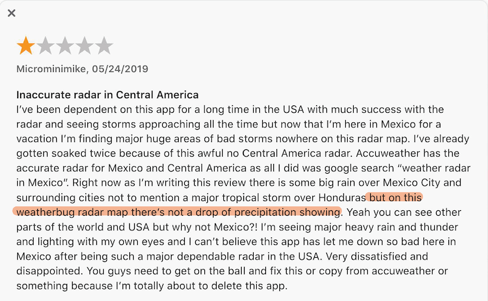
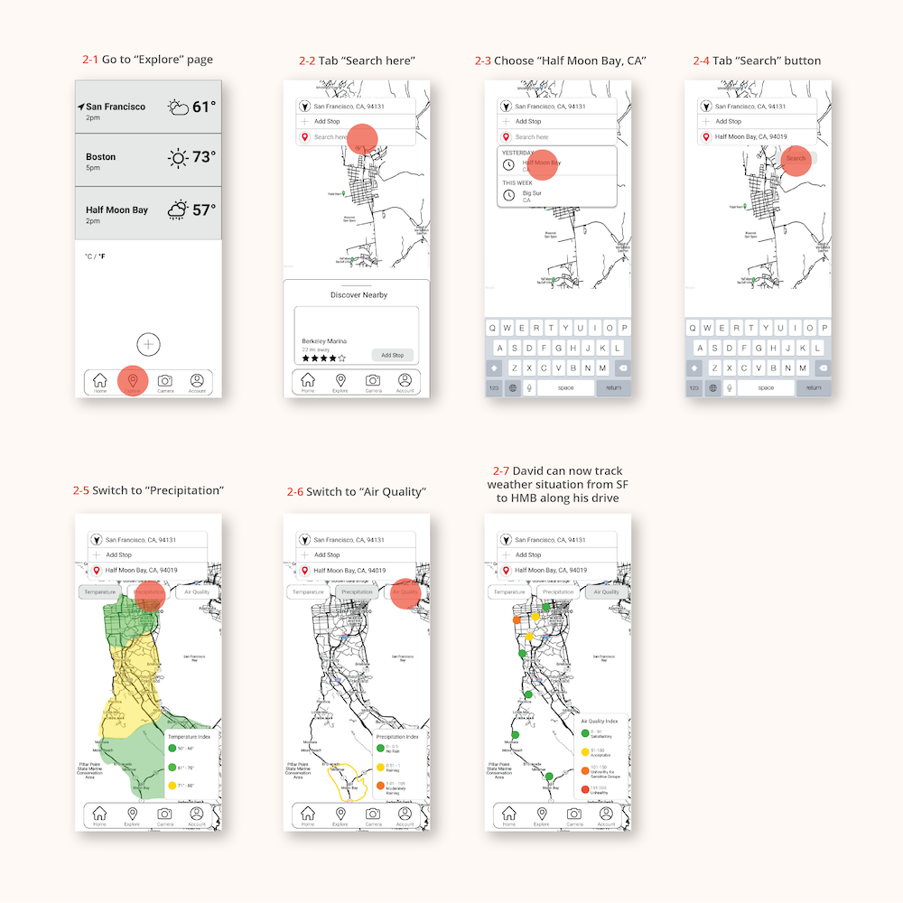
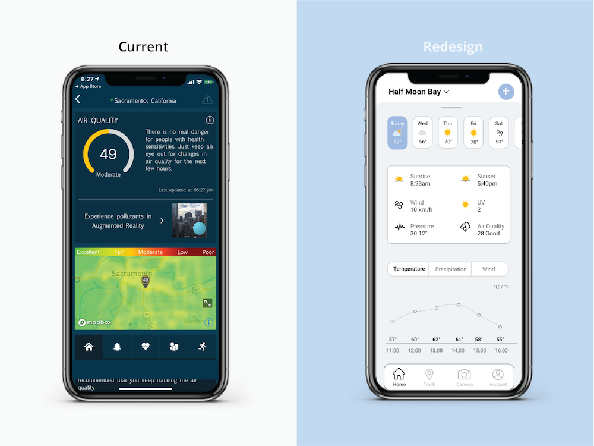
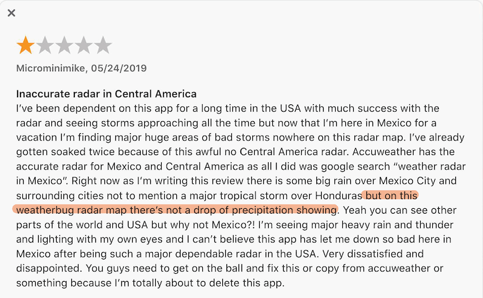
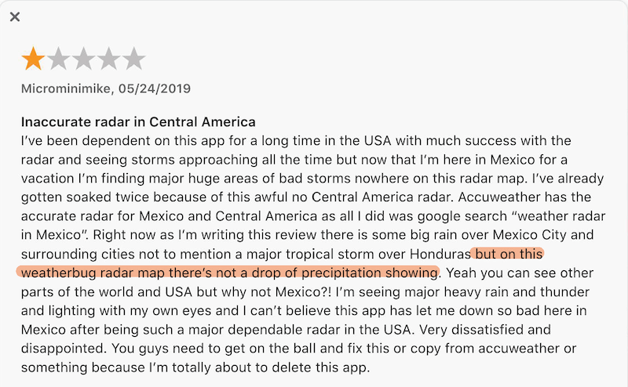

Overview This is a redesign project for WeatherBug, an app that tracks weather conditions from point A to point B, and allows people to share their local weather with friends.
Personal Experience At the beginning of this project, our instructor asked us to evaluate this app as a user. I encountered three pain points that I had when I tried to use the app:
Weather updates are all over the place and there is too much information on homepage.
Random feed of advertising in the middle of the page makes users frustrated
The functions of the map page and the icons in the navigation bar are unclear.
"Current WeatherBug app design doesn’t portrait a feeling or connection with users. Seems like weather reports with random news and advertising."
02. Redesign Goals
Make visual design more aesthetic and engaging Use color palette to measure temperature and icons for weather status: cloudy, rainy, sunny etc.
Add a feature to track weather conditions from point A to point B Travelers can use WeatherBug to explore weather conditions along their trip.
Allow sharing local weather via friends and communities Add a camera button to allow users of different locations to take picture of local weather and share with the community.
Both genders use WeatherBug, but with slightly more men.
Income Demographic
Accuweather, WeatherBug biggest competitor, has 30% users with $25k-$59,999k income. Presumably, WeatherBug user income demographic is middle class. * In America, that is $40,500 to $122,000
Geographic Demographic
Most WeatherBug users are located in the US.
04. App Store Reviews
Updates are delayed & inaccurate
Map layer icons and alerts are confusing

Visual design is packed
Summary The majority of negative reviews have been about:
Delayed and inaccurate weather updates.
Some users are concerned about privacy issues.
Warnings are too dramatic and scary.
Visual design is packed and it's easy to go to the wrong page.
Advertising information is overwhelming.
05. Target Audience Statement
WeatherBug target audience are between age 25-54, more men than women, residing in the US, who earn $60,000/year, interested in news and media, arts and entertainment TV streaming.
DESIGN 01. Personas & User Stories
02. User Flows
These are three outcomes that users hope to achieve through interacting with WeatherBug. I'm using David's user story as the context.
Task 1
Task 2
Task 3
David wants to add Half Moon Bay to his location list and check its weather for today and the upcoming week.
Select the app from your phone’s home screen
→
Tab the “plus” icon at the bottom center
→
Enter city name: Half Moon Bay, CA
→
Tab “Half Moon Bay”
→
Click “Today’s Details”
→
Check today’s weather info and tap “Wed” for tomorrow
→
Weather forecast for the upcoming week is now accessible
David wants to explore weather situation from San Francisco to Half Moon Bay.
Go to “Explore” page
→
Tab “Search here”
→
Choose “Half Moon Bay, CA”
→
Tab “Search” button
→
Switch to “Precipitation”
→
Switch to “Air Quality”
→
David now knows the weather situation on the way from SF to HMB
David wants to share the weather at my current location with Alex by taking a picture.
Click camera icon at the bottom of the homepage
→
Take a picture by pressing the circle at the bottom center
→
Tab “share” button on the up right corner
→
Choose “Alex J” profile with text message icon
→
Send the picture with caption
→
Receive “message sent” confirmation pop up
03. Mid-fidelity Prototype
User Flow 1
User Flow 2
User Flow 3

TESTING 01. Usability Testing
Date: November 16th, 2020 Moderator: Cindy Chan Tester: Xinyue Li
Date: November 19th, 2020 Moderator: Cindy Chan Tester: Mia Jin
Date: November 19th, 2020 Moderator: Mia Jin Tester: Cindy Chan
Key Conclusions
Task 1
1-5 Tomorrow and future weather details tab is hard to slide up in prototype.
1-5 “Today's Details” icon needs to be bigger so it’s easier to spot.
1-6 Air quality can also use an icon bar to present air quality.
Task 2
2-2 The current location button is pointing down, maybe you can adjust it a little bit, like pointing up.
2-3 I feel it could be better for users to understand the function by labeling this page(ex.search a new location weather)something like that.
2-4 Maybe the map could be more zoomed in!
Task 3
3-2 Can experiment with giving a little hint when a picture is taken.
"In version A, it is clear that button means search, but in Version B, the arrow is not clear to me."
"I don’t think the arrow is needed."
"Version A is more clear and the position of the search icon is better than Version B."
Suggestions
"I'm not sure with version B as well, maybe you can explore more options?"
"If you need more space to add information, you can create a new screen or pop-up screen."
03. Usability Testing Changes
Homepage
Set current location weather details page to be homepage.
Added a drop-down menu to switch between locations.
Put a plus button at the top to be able to add new locations.
Made future dates in a horizontal bar of tabs so that current day weather details can be shown.
Weather Details Page
Replaced weather description with all icons and texts.
Added indications and measurements of temperature fluctuations.
Added °C/°F conversion.
Highlighted Home tab to indicate current page.
Explore Page
Added visual hierarchy on the navigation bar.
Made search result available directly after user input.
Highlighted map sections with different colors according to weather situations.
Added 3 different weather indicator buttons.
FINAL PRODUCT 01. High Fidelity Prototype
User Flow 1
User Flow 2
User Flow 3
02. WeatherBug Demo Video
RESULT 01. Screen Comparison
Homepage
Improved visual hierarchy and consistency with minimalist color palette design.
Added a navigation bar with increased functions.
Incorporated various weather icons with colors to convey a clean and modern style.
Track Page
Major weather factors are listed in a horizontal tap.
Colors and shapes are used to clearly indication location of stated weather status.
Navigation bar is included.
Index form for weather at different locationsis attached.

Weather Details Page
Weather conditions are listed as texts and icons in a more organized layout.
Graphs are used with measurements and indicators to represent key weather conditions.
Future weather forecasts are now easily accessible.
What I learned from this project
At the beginning of design phase, I was overly ambitious - trying to implement as many features as possible in a single user flow. Later on during usability tests, I realized that sometimes "Less is More". My design became so much more clear and functional during the second round of testings.
I now value the importance of doing usability testings more than ever as they are the direct feedback from actual potential users, even when your design is still in incubation phase.
I plan to add more features to the existing redesign in order to make the app interfaces more interactive: ranking system for top three cities or even include a travel plan.
 
